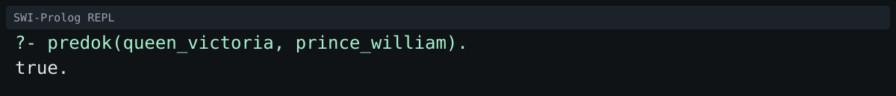
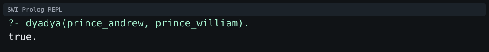
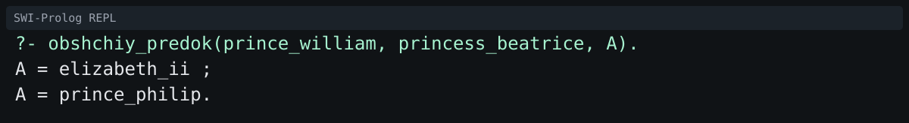
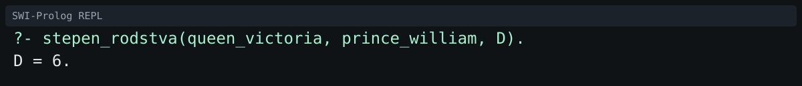
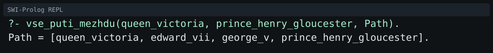
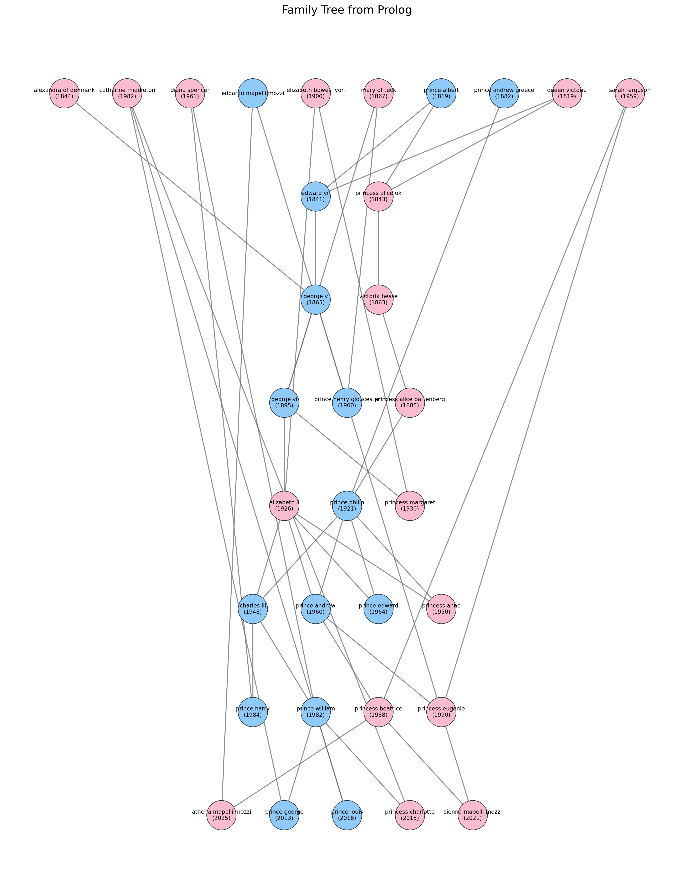

Генеалогические отношения и рекурсивный вывод на языке Prolog.
В качестве предметной области выбрано реальное семейное древо британской королевской семьи с фокусом на Елизавету II.
В базу знаний включены: - предки Елизаветы II (ветка от королевы Виктории); - её супруг (принц Филипп) и его предковая линия; - потомки Елизаветы II (Карл III, Уильям, Гарри и др.); - боковая ветка семьи (ветка принца Эндрю: Беатрис, Евгения и дети Беатрис).
База покрывает более 30 реальных персон и более 7 поколений.
Основной файл: family.pl.
muzhchina/1 - факт о мужском поле персоны;zhenshchina/1 - факт о женском поле персоны;roditel/2 - отношение родитель -> ребёнок.data_rozhdeniya/2 - дата рождения date(Year,Month,Day);data_smerti/2 - дата смерти;mesto_rozhdeniya/2 - место рождения;professiya/2 - роль/профессия (например, monarch, royal).snake_case;roditel/2, остальные отношения выводятся правилами;mat(X, Y) - X мать Y;otets(X, Y) - X отец Y;dedushka(X, Y) - X дедушка Y;babushka(X, Y) - X бабушка Y;brat(X, Y) - X брат Y;sestra(X, Y) - X сестра Y;dyadya(X, Y) - X дядя Y;tyotya(X, Y) - X тётя Y;predok(X, Y) - X предок Y (рекурсивно);potomok(X, Y) - X потомок Y (через predok/2);dvoyurodny_brat(X, Y) - X двоюродный брат Y;troyurodnaya_sestra(X, Y) - X троюродная сестра Y.pokolenie(P, N) - номер поколения персоны P;obshchiy_predok(X, Y, A) - ближайший общий предок A для X и Y;stepen_rodstva(X, Y, D) - минимальное расстояние между X и Y в графе родства;net_ciklov - проверка отсутствия циклов в дереве;logichny_vozrasti - проверка, что родитель старше ребёнка как минимум на 12 лет;net_konfliktov_predkov - отсутствие конфликтов «персона является своим предком».opisanie_rodstva(X, Y, Text) - генерация текстового описания родства;eksport_v_dot(FilePath) - экспорт графа родства в формат DOT;vse_puti_mezhdu(X, Y, Path) - поиск всех путей между двумя персонами.Скриншоты окна SWI-Prolog:
|
 |
 |
|
 |
 |
|
 |
|
Для визуализации используется скрипт visualize_family.py (интеграция Python + Prolog через pyswip, отрисовка через networkx и matplotlib).
Команда запуска:
python3 -m venv .venv
source .venv/bin/activate
pip install -r requirements.txt
python3 visualize_family.py --prolog family.pl --output family_tree.png --dot family_tree.dot
Результат визуализации:
